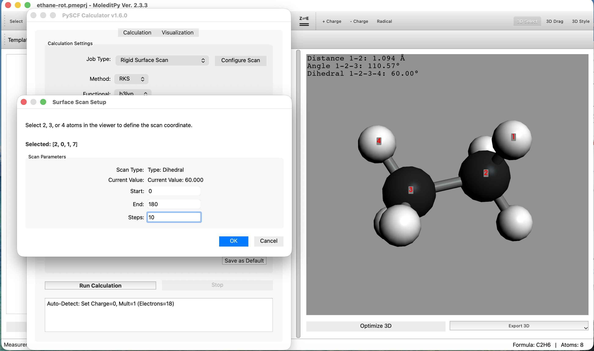
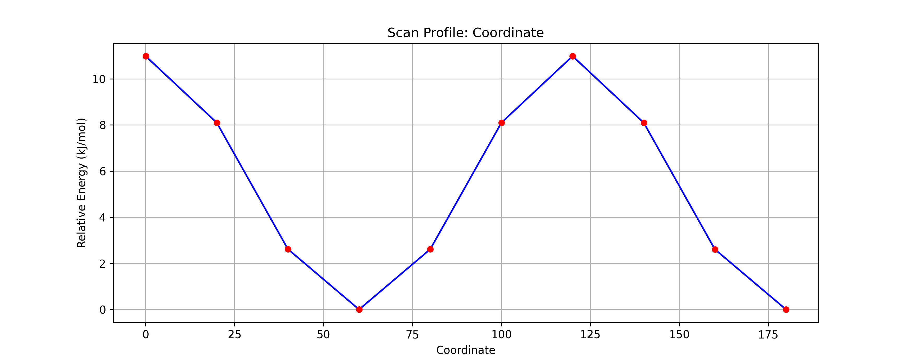

MoleditPy PySCF Calculator Plugin Tutorial
2. エタンの内部回転とスキャン計算
(計算レベル: B3LYP/STO-3G)
目的
エタン分子の C-C 単結合を回転させた際のポテンシャルエネルギー曲面（PES）をスキャンし、エネルギー変化と分子構造の相関を観察します。回転障壁は実験的に約 12 kJ/mol であることが知られています。
操作手順
Step 1: 分子モデルの構築
- エタンの描画:
- メインキャンバスにて、炭素2つを繋げた構造（C-C）を描画します。
- 自動的に水素が付加されるため、これは エタン (C2H6) となります。
- 変換と起動:
- "Convert 2D to 3D" をクリックして立体構造へ変換します。
Extensions > PySCF Calculator を起動します。
Step 2: スキャン設定と実行
- Job Typeの選択:
Calculation タブにて、Job Type を Relaxed Surface Scan
に設定します。- Method を
RKS、Functional を
b3lyp、Basis を sto-3g に設定します。
- これは各回転角で構造最適化を行いながらエネルギーを計算するモードです。
- スキャン変数の設定:
- Job Type 横にある
Configure Scan ボタンをクリックします。
- 動作: アプリケーションが「スキャン設定モード」に入ります。
- 二面角の定義:
- メイン画面（3Dビュー）に戻ります。
- 回転角（二面角）を定義するため、原子を 水素 → 炭素 → 炭素 → 水素 の順に4つクリックして選択します。
- パラメータ設定と実行:
- 現在の角度が表示されたダイアログが出現します。
- Start を
0 に設定します。
- End を
180 に設定します。
- Steps を
10 に設定します。
Run Calculation をクリックします。順次計算が実行されます。

Step 3: 結果のアニメーション再生
全ステップの計算が完了するまで待ちます。終了すると自動的に Scan Results ウィンドウが表示されます。
- グラフの確認:
- 表示されたポテンシャルエネルギー曲線を確認します。
- 極大（山）: 0°, 120°。これらはエネルギーが高い不安定な 重なり形
(Eclipsed) です。
- 極小（谷）: 60°, 180°。これらは安定な ねじれ形 (Staggered) です。
- 計算されたエネルギー障壁も、実験値と同様に 約 12 kJ/mol になっていることを確認しましょう。

- 回転の可視化:
- ウィンドウ内の
Play ボタンをクリック（またはスライダーを操作）します。
- メイン画面の分子モデルがグラフと連動して回転し、構造変化がアニメーション表示されることを確認します。